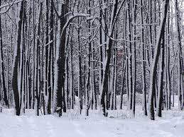

seasons of the year
"The coldest season of the year, in the northern hemisphere from December to February and in the southern hemisphere from June to August." as described by the Oxford dictionary. Winter is a very beautiful time of year, as long as you live somewhere that it snows... but not too much. Snow is the best part of the winter. And because of how cold it gets, all the sports played during the time are all indoor. Winter is for snowy events and staying inside and staying warm. Most people would also call the winter "cuffing season" because of all the couple things you can do in the winter time.